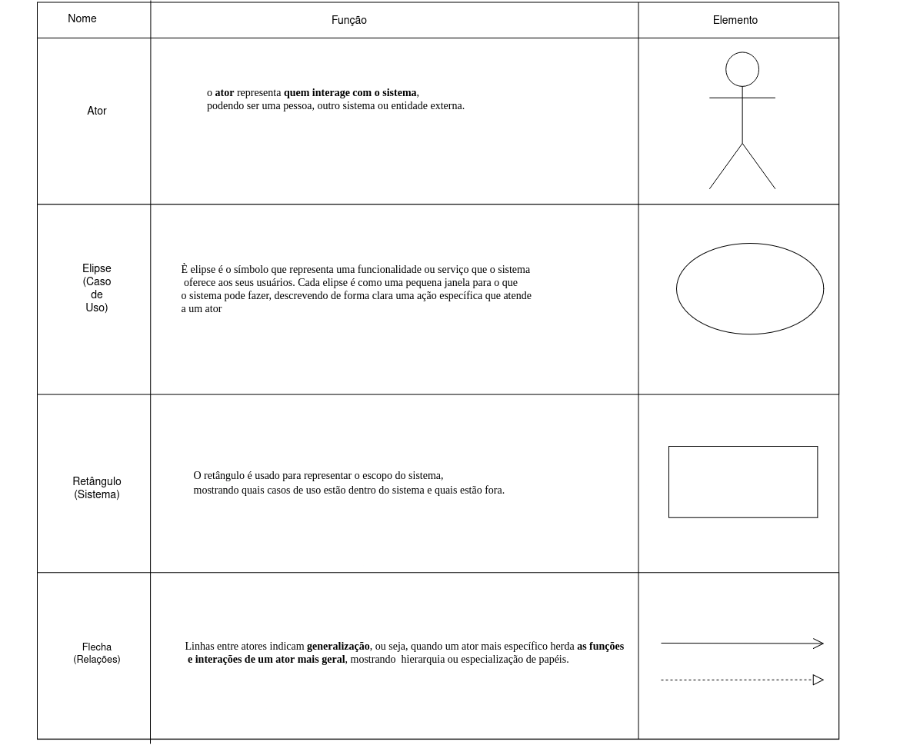

Casos de Uso
Introdução
Um caso de uso se refere a uma descrição detalhada de como o sistema será utilizado em uma determinada situação ou contexto. Ele descreve as interações entre os estudantes e o sistema, apresentando os passos necessários para alcançar um objetivo específico[1]. O objetivo dos casos de uso é auxiliar no processo de desenvolvimento de um sistema, fornecendo uma visão clara dos requisitos funcionais do sistema, descrevendo as ações que os estudantes podem realizar e as respostas do sistema a ações.
Participantes
A seguir temos a tabela 1, onde indica todos os participantes do caso de uso, o horário e local da aplicação da técnica.
| Nome | quais etapas participou | Data |
|---|---|---|
| Camila Silva | Elaborou os casos de uso: UC02, UC03 e UC04 | 09/10/2025 |
| Geovanna Alves | Elaborou os casos de uso: UC01, UC08 e UC09 | 09/10/2025 |
| Lara Souza | Elaborou os casos de uso: UC012 e UC014 | 09/10/2025 |
| Luisa de Souza | Elaborou os casos de uso: UC01, UC02, UC05 e UC06 | 09/10/2025 |
| Pedro Henrique | Elaborou os casos de uso: UC010, UC011 e UC013 | 09/10/2025 |
| Yan Matheus | Elaborou os casos de uso: UC07, UC012 e UC014 | 09/10/2025 |
Tabela 1: Participantes Casos de uso
Autor: Yan Matheus
Metodologia
Figura 1: Elementos do diagrama de casos de uso

Fonte: Fonte: Lara Souza e Pedro Henrique
Figura 2: Elementos das relações do diagrama de casos de uso
Fonte: Lara Souza e Pedro Henrique
Diagrama de Casos de Uso
A figura 3 demonstra o diagrama de casos de uso.
Figura 3: Casos de uso do app Jornada do estudante
Fonte: Lara Souza, Pedro Henrique, Yan Matheus, Geovanna Alves, Luisa de Souza e Camila Silva
Especialização dos casos de uso
As tabelas de 2 a 15 apresentam a especialização dos casos de uso.
| UC01 | Informações |
|---|---|
| Descrição | O estudante pode acessar um tutorial em vídeo demonstrando as funcionalidades do aplicativo |
| Atores envolvidos | Estudante (primário) |
| Ação | O estudante acessa o tutorial do aplicativo |
| Pré-condição | O estudante deve estar logado no aplicativo |
| Fluxo principal | entrar no aplicativo > acessar o tutorial em vídeo |
| Fluxo alternativo | O estudante pausa ou sai do vídeo antes do término |
| Fluxo de exceção | Falha na conexão impede o carregamento do vídeo |
| Pós-condição | O tutorial em vídeo é exibido com sucesso |
| Relacionamentos | Associação com estudante |
| Data de Criação | 09/10/2025 |
| Rastreabilidade | RQ53 |
Tabela 2: Acessar tutorial
Fonte: Luisa de Souza e Geovanna Alves
| UC02 | Informações |
|---|---|
| Descrição | O estudante pode visualizar informações da disciplina como notas, horários e professor responsável |
| Atores envolvidos | Estudante (primário) e professor (secundário) |
| Ação | O estudante visualiza informações da disciplinas |
| Pré-condição | O estudante deve estar matriculado em pelo menos uma disciplina |
| Fluxo principal | entrar no aplicativo > acessar a página da disciplina |
| Fluxo alternativo | O estudante acessa outra disciplina pelo menu |
| Fluxo de exceção | Falha na comunicação com o servidor impede o carregamento das informações |
| Pós-condição | As informações da disciplina são exibidas na tela |
| Relacionamentos | Associação com estudante e extensão para "Acessar fórum da disciplina" |
| Data de Criação | 09/10/2025 |
| Rastreabilidade | RQ17, RQ18, RQ19 e RQ20 |
Tabela 3: Visualizar informações da disciplina
Fonte: Camila Silva e Luisa de Souza
| UC03 | Informações |
|---|---|
| Descrição | O estudante pode acessar o fórum da disciplina para ter um contato direto com o professor |
| Atores envolvidos | Estudante (primário) e professor (secundário) |
| Ação | O estudante acessa o fórum da disciplina para falar com o professor |
| Pré-condição | O estudante deve estar logado e matriculado na disciplina |
| Fluxo principal | entrar no aplicativo > acessar a página da disciplina > acessar fórum da disciplina |
| Fluxo alternativo | O estudante apenas lê as mensagens sem interagir |
| Fluxo de exceção | O fórum está temporariamente indisponível |
| Pós-condição | O fórum da disciplina é exibido e pode ser utilizado |
| Relacionamentos | Extensão de "Visualizar informações da disciplina" e associação com professor |
| Data de Criação | 09/10/2025 |
| Rastreabilidade | RQ57 |
Tabela 4: Acessar fórum da disciplina
Fonte: Camila Silva
| UC04 | Informações |
|---|---|
| Descrição | O estudante pode consultar a página de auxílio para verificar informações |
| Atores envolvidos | Estudante (primário) |
| Ação | O estudante acessa a página do auxílio |
| Pré-condição | O estudante deve possuir cadastro ativo no programa de auxílio |
| Fluxo principal | entrar no aplicativo > acessar a página do auxílio |
| Fluxo alternativo | O estudante atualiza a página para obter novos dados |
| Fluxo de exceção | Falha na conexão com o servidor do programa de auxílio |
| Pós-condição | As informações sobre o auxílio são apresentadas |
| Relacionamentos | Asociação com aluno e extensões com "Editar dados bancários", "Visualizar dia do pagamento do auxílio" e "Comunicar em um canal de conversa do auxílio" |
| Data de Criação | 09/10/2025 |
| Rastreabilidade | RQ31, RQ32 e RQ33 |
Tabela 5: Consultar auxílio
Fonte: Camila Silva
| UC05 | Informações |
|---|---|
| Descrição | O estudante pode editar seus dados bancários do recebimento do auxílio pelo Gov.br |
| Atores envolvidos | Estudante (primário) e Gov.br (secundário) |
| Ação | O estudante edita suas informações bancárias acessando um link do Gov.br |
| Pré-condição | O estudante deve estar logado e ter acesso ao Gov.br |
| Fluxo principal | entrar no aplicativo > acessar a página do auxílio > Editar informações bancárias > Gov.br |
| Fluxo alternativo | O estudante cancela a edição antes de confirmar |
| Fluxo de exceção | Erro de autenticação no Gov.br impede a edição dos dados |
| Pós-condição | Os dados bancários são atualizados com sucesso |
| Relacionamentos | Asociação com Gov.br e extensão de "Consultar auxílio" |
| Data de Criação | 09/10/2025 |
| Rastreabilidade | RQ31, RQ32 e RQ33 |
Tabela 6: Editar dados bancários
Fonte: Luisa de Souza
| UC06 | Informações |
|---|---|
| Descrição | O estudante pode visualizar o dia do pagamento do auxílio |
| Atores envolvidos | Estudante (primário) |
| Ação | O estudante visualiza o dia do pagamento do auxílio |
| Pré-condição | O estudante deve estar inscrito no programa de auxílio |
| Fluxo principal | entrar no aplicativo > acessar a página do auxílio > Visualizar dia do pagamento |
| Fluxo alternativo | O estudante consulta datas de pagamentos anteriores |
| Fluxo de exceção | O sistema não consegue obter as informações de pagamento |
| Pós-condição | A data de pagamento é exibida corretamente |
| Relacionamentos | Extensão de "Consultar auxílio" |
| Data de Criação | 09/10/2025 |
| Rastreabilidade | RQ34 |
Tabela 7: Visualizar dia do pagamento do auxílio
Fonte: Luisa de Souza
| UC07 | Informações |
|---|---|
| Descrição | O estudante pode tirar dúvidas sobre o auxílio em um canal de conversa |
| Atores envolvidos | Estudante (primário) e atendente (secundário) |
| Ação | O estudante se comunica através de um canal com um atendente |
| Pré-condição | O estudante deve estar logado e ter um canal de atendimento disponível |
| Fluxo principal | entrar no aplicativo > acessar a página do auxílio > Falar com um atendente |
| Fluxo alternativo | O estudante envia uma mensagem fora do horário de atendimento e espera muito tempo para uma resposta |
| Fluxo de exceção | Falha no servidor impede o envio da mensagem |
| Pós-condição | A conversa é registrada no sistema de atendimento |
| Relacionamentos | Extensão de "Consultar auxílio" e associação com Atendente |
| Data de Criação | 09/10/2025 |
| Rastreabilidade | RQ35 |
Tabela 8: Comunicar em um canal de conversa do auxílio
Fonte: Yan Matheus
| UC08 | Informações |
|---|---|
| Descrição | O estudante pode criar, editar e excluir eventos na agenda |
| Atores envolvidos | Estudante (primário) |
| Ação | O estudante cadastra eventos na agenda, podendo edita-los e exclui-los |
| Pré-condição | O estudante deve estar logado no aplicativo |
| Fluxo principal | entrar no aplicativo > Agenda |
| Fluxo alternativo | O estudante edita ou exclui o evento após criá-lo |
| Fluxo de exceção | O sistema não consegue salvar o evento por falha de sincronização |
| Pós-condição | O evento é criado, salvo e exibido na agenda |
| Relacionamentos | Associação de Estudante, extensão para "Notificar atividades acadêmicas" e inclusão para "Adicionar grau de importância" |
| Data de Criação | 09/10/2025 |
| Rastreabilidade | RQ45, RQ46 e RQ47 |
Tabela 9: Cadastrar eventos na agenda
Fonte: Geovanna Alves
| UC09 | Informações |
|---|---|
| Descrição | O estudante pode receber notificações de atividades cadastradas na agenda |
| Atores envolvidos | Estudante (primário) |
| Ação | O estudante ativa as notificações ao criar o evento na agenda |
| Pré-condição | O estudante deve ter criado pelo menos um evento na agenda |
| Fluxo principal | entrar no aplicativo > Agenda > Criar/Editar evento > Ativar notificações? |
| Fluxo alternativo | O estudante escolhe um horário diferente de notificação |
| Fluxo de exceção | O sistema falha ao enviar a notificação na data agendada |
| Pós-condição | A notificação é configurada com sucesso |
| Relacionamentos | Extensão de "Cadastrar eventos na agenda" |
| Data de Criação | 09/10/2025 |
| Rastreabilidade | RQ49 |
Tabela 10: Notificar atividades com antecedência
Fonte: Geovanna Alves
| UC010 | Informações |
|---|---|
| Descrição | O estudante seleciona o grau de importância à atribuir para o evento criado na agenda |
| Atores envolvidos | Estudante (primário) |
| Ação | O estudante seleciona a importância da atividade criada |
| Pré-condição | O estudante deve estar criando ou editando um evento na agenda |
| Fluxo principal | entrar no aplicativo > Agenda > Criar/Editar evento > Importância do evento |
| Fluxo alternativo | O estudante altera a importância posteriormente |
| Fluxo de exceção | O sistema não consegue registrar o grau de importância selecionado |
| Pós-condição | O evento é salvo com o grau de importância definido |
| Relacionamentos | Inclusão de "Cadastrar eventos na agenda" |
| Data de Criação | 09/10/2025 |
| Rastreabilidade | RQ51 |
Tabela 11: Adicionar grau de importância
Fonte: Pedro Henrique
| UC011 | Informações |
|---|---|
| Descrição | O estudante pode requerir documentos da instituição de ensino |
| Atores envolvidos | Estudante (primário) e Instituição de ensino (secundário) |
| Ação | O estudante requere documentos para sua instituição de ensino |
| Pré-condição | O estudante deve estar logado e vinculado a uma instituição de ensino |
| Fluxo principal | entrar no aplicativo > Emitir documentos |
| Fluxo alternativo | O documento ainda não pode ser acessado |
| Fluxo de exceção | O documento não é gerado com sucesso |
| Pós-condição | O documento é exibido ao estudante, caso esteja disponível |
| Relacionamentos | Associação de estudante, associação de instituição de ensino e generalização para "Emitir histórico", "Emitir declaração de vínculo" e "Emitir certificados" |
| Data de Criação | 09/10/2025 |
| Rastreabilidade | RQ27), RQ28 e RQ60 |
Tabela 12: Requerir documentos
Fonte: Pedro Henrique
| UC012 | Informações |
|---|---|
| Descrição | O estudante pode requerir seu histórico da instituição de ensino |
| Atores envolvidos | Estudante (primário) e Instituição de ensino (secundário) |
| Ação | O estudante requere seu histórico para sua instituição de ensino |
| Fluxo principal | entrar no aplicativo > Emitir documentos > Emtiir histórico escolar |
| Pré-condição | O estudante deve estar matriculado e com situação ativa na instituição |
| Fluxo alternativo | O estudante não baixa o histórico imediatamente, preferindo acessá-lo mais tarde pela área “Documentos” |
| Fluxo de exceção | Falha no sistema da instituição impede a emissão do histórico |
| Pós-condição | O histórico escolar é emitido com sucesso |
| Relacionamentos | Generalização de "Requerir documentos" |
| Data de Criação | 09/10/2025 |
| Rastreabilidade | RQ28 |
Tabela 13: Emitir histórico
Fonte: Lara Souza e Yan Matheus
| UC013 | Informações |
|---|---|
| Descrição | O estudante pode requerir sua declaração de vínculo da instituição de ensino |
| Atores envolvidos | Estudante (primário) e Instituição de ensino (secundário) |
| Ação | O estudante requere sua declaração de vínculo para sua instituição de ensino |
| Pré-condição | O estudante deve ter vínculo ativo com a instituição |
| Fluxo principal | entrar no aplicativo > Emitir documentos > Emtiir declaração de vínculo |
| Fluxo alternativo | O estudante não baixa a declaração imediatamente, preferindo acessá-lo mais tarde pela área “Documentos” |
| Fluxo de exceção | O sistema não consegue gerar o documento solicitado |
| Pós-condição | A declaração de vínculo é gerada e disponibilizada |
| Relacionamentos | Generalização de "Requerir documentos" |
| Data de Criação | 09/10/2025 |
| Rastreabilidade | RQ27 |
Tabela 14: Emitir declaração de vínculo
Fonte: Pedro Henrique e Yan Matheus
| UC014 | Informações |
|---|---|
| Descrição | O estudante pode requerir seus certificados da instituição de ensino |
| Atores envolvidos | Estudante (primário) e Instituição de ensino (secundário) |
| Ação | O estudante requere seus certificados para sua instituição de ensino |
| Pré-condição | O estudante deve ter completado atividades ou cursos válidos para certificação |
| Fluxo principal | entrar no aplicativo > Emitir documentos > Emtiir certificados |
| Fluxo alternativo | O estudante não baixa o certificado imediatamente, preferindo acessá-lo mais tarde pela área “Documentos” |
| Fluxo de exceção | Falha no sistema impede a emissão do certificado |
| Pós-condição | O certificado é gerado e armazenado no aplicativo |
| Relacionamentos | Generalização de "Requerir documentos" |
| Data de Criação | 09/10/2025 |
| Rastreabilidade | RQ60 |
Tabela 15: Emitir certificados
Fonte: Lara Souza e Yan Matheus
Gravação
Participantes 1
A seguir temos a tabela 16, onde indica todos os participantes da sessão do caso de uso, o horário e local da aplicação da técnica.
| Nome | Data |
|---|---|
| Camila Silva | 09/10/2025 |
| Geovanna Alves | 09/10/2025 |
| Lara Souza | 09/10/2025 |
| Luísa de Souza | 09/10/2025 |
| Pedro Henrique | 09/10/2025 |
| Yan Matheus | 09/10/2025 |
Tabela 16: Participantes Casos de uso
Autor: Yan Matheus
Video 1
Validação - Caso de uso
Participantes 2
A seguir temos a tabela 17, onde indica todos os participantes da validação da técnica, o horário e local da aplicação da técnica. O estudante corresponde ao perfil de estudante 2
| Papel | Nome | Data | Hora | Local |
|---|---|---|---|---|
| Mediador | Yan Matheus | 10/10/2025 | 18:30 | Faculdade de Ciências e Tecnologias em Engenharia – FCTE/UnB |
| estudante | Pedro Henrique | 10/10/2025 | 18:30 | Faculdade de Ciências e Tecnologias em Engenharia – FCTE/UnB |
Tabela 17: Validação Caso de uso
Autor: Luísa de Souza
Video 2
Agradecimentos
Bibliografia
1. Lucidchart. Diagrama de Caso de Uso UML. Disponível em: <https://www.lucidchart.com/pages/pt/diagrama-de-caso-de-uso-uml>. Acesso em: 14 maio 2023.
2. BARBOSA, S. D. J.; SILVA, B. S. Interação Humano-Computador. Rio de Janeiro: Elsevier, 2011.
3. Fernando, Sidney. Casos de uso. Repositório da disciplina de Requisitos de Software da Universidade de Brasília, 2023. Disponível em: hhttps://requisitos-de-software.github.io/2023.1-BilheteriaDigital/modelagem/useCase/. Acesso em: 10 out. 2025
Histórico de Versões
| Versão | Data | Descrição | Autor | Revisor |
|---|---|---|---|---|
| 1.0 | 10/10/2025 | Documentação dos do caso de uso | Lara Souza, Pedro Henrique, Yan Matheus, Geovanna Alves, Luisa de Souza e Camila Silva | Geovanna Alves |
| 1.1 | 20/10/2025 | Atualização da tabela | Pedro Henrique | Lara Souza |
| 1.2 | 09/11/2025 | Atualização da tabela | Yan Matheus | Lara Souza |